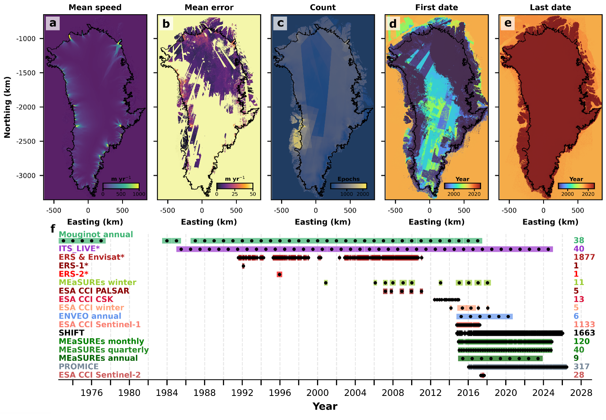
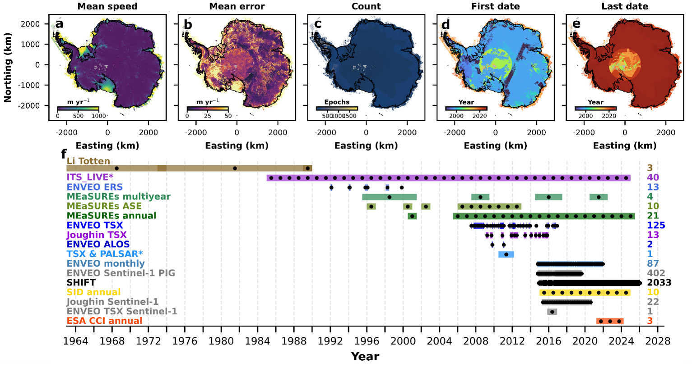

Unified Datasets#
Overview#
To construct the Unified Dataset, we collated the Contributing Datasets for each ice sheet into a series of Zarr stores. The Figures below provide a summary of the unified data for Greenland and Antarctica.

Fig. 4 Summary of the Greenland Ice Sheet unified dataset. (a) Time-average mean speed, (b) mean error, (c) total number of valid (non-NaN) measurements, (d) the date of the first valid measurement and (e) date of the last valid measurement across all contributing datasets. (f) Timeline of all contributing datasets, where each black dot represents the mid-date of each measurement epoch and the width of each coloured bar represents the duration of each measurement epoch. The number of epochs is listed on the right. *Contributing dataset name has been shortened for display ? full names are in Table 1.#

Fig. 5 Summary of Antarctic Ice Sheet unified dataset. (a) Time-average mean speed, (b) mean error, (c) total number of valid (non-NaN) measurements, (d) the date of the first valid measurement and (e) date of the last valid measurement across all contributing datasets. (f) Timeline of all contributing datasets, where each black dot represents the mid-date of each measurement epoch and the width of each coloured bar represents the duration of each measurement epoch. The number of epochs is listed on the right. *Contributing dataset name has been shortened for display ? full names are in Table 2.#
Zarr chunk definition#
SHIVER provides three Zarr stores for each of Greenland and Antarctica. To support different research workflows without compromising performance, the velocity estimates (speed, vx, vy and their associated errors, measured in m yr-1) are provided as three Zarr V3 stores that are identical except for their chunking strategy, which are chosen to optimize common access patterns.
The details of the Zarr chunk definitions for our Greenland Zarr stores are:
Table 1. Greenland Zarr chunk definitions.
Zarr Name |
Chunk definition (x, y, time) |
Chunk spatial extent (km) |
Chunk size (MB) |
Analysis benefit |
|---|---|---|---|---|
|
1024 x 1024 x 1 |
204.8 x 204.8 to 3276.8 x 3276.8 |
4.2 |
Large area analysis involving few epochs e.g. calculation of spatial gradients in ice velocity |
|
64 x 64 x inf |
12.8 x 12.8 |
86.9 |
Small area analysis involving many epochs e.g. extraction of velocity timeseries |
|
256 x 256 x 300 |
51.2 x 51.2 |
78.6 |
Analysis requiring areas and durations of intermediate size e.g. examination of individual glacier basins over several years |
*greenland_multisource_velocity
Whilst the Antarctic Zarr stores are chunked with these definitions:
Table 2. Antarctica Zarr chunk definitions.
Zarr Name |
Chunk definition (x, y, time) |
Chunk spatial extent (km) |
Chunk size (MB) |
Analysis benefit |
|---|---|---|---|---|
|
1024 x 1024 x 1 |
204.8 x 204.8 to 6553.6 x 6553.6 |
4.2 |
Large area analysis involving few epochs e.g. calculation of spatial gradients in ice velocity |
|
64 x 64 x inf |
12.8 x 12.8 |
45.7 |
Small area analysis involving many epochs e.g. extraction of velocity timeseries |
|
256 x 256 x 300 |
51.2 x 51.2 |
78.6 |
Analysis requiring areas and durations of intermediate size e.g. examination of individual glacier basins over several years |
*antarctica_multisource_velocity
OME-Zarr#
Notably, our spatially-optimised Zarr store utilises the OME-Zarr format, which implements the Open Microscopy Environment Next-Generation File Formats (OME-NGFF) specification (Moore et al. 2023). This multi-level Zarr pyramid is analogous to a Cloud Optimised GeoTIFF, where the chunk shape remains fixed at 1024x1024 pixels across each level, but the spatial resolution of underlying data is successively downsampled by a factor of two at each level. The base layer (layer 0) retains the 200 x 200 m resolution, reducing to a minimum spatial resolution of 3200 x 3200 m for Greenland and 6400 x 6400 m for Antarctica.
Reprojection#
During ingestion, velocity fields from every Contributing Dataset (Tables 1 & 2; Figures 1 & 2) were reprojected and resampled to a common spatial grid using nearest-neighbour interpolation to preserve the original velocity magnitudes. The Greenland grid (EPSG:3413) is identical to that used for the ?PROMICE? Contributing Dataset, while the Antarctic grid (EPSG:3031) is identical to that used for the ?ENVEO monthly? Contributing Dataset. Both Unified Dataset grids are defined at a 200 x 200 m spatial resolution.
Timestamps#
The Zarr stores retain the temporal metadata of each Contributing Dataset. For every Measurement Epoch, we record the start, end and central dates of the velocity data, enabling the temporal resolution of the Measurement Epoch to be calculated. One product?the ?Joughin TSX? dataset (Table 2; (Joughin et al. 2021))?has an ambiguous temporal resolution of two to five months, so we assign a temporal resolution of 3.5 months to the relevant Measurement Epochs of that Contributing Dataset in our Unified Dataset. Furthermore, the Zarr protocol requires strictly unique temporal coordinates for start, end and central dates. To satisfy this requirement, we introduce up to 1000 milliseconds of noise to the published timestamps, which is negligible compared to the temporal resolution of the measurements (four days minimum). This adjustment ensures unique epoch identifiers without meaningfully altering the temporal accuracy of the metadata.
Measurement error#
Pixel-wise uncertainty estimates for every Measurement Epoch are included in the Unified Dataset. Where pixel-wise error estimates are provided by the Contributing Dataset, these values are preserved and incorporated directly into the Zarr stores. For datasets lacking published error estimates, we apply an assumed uniform error of 5% of the measured velocity magnitude. Additionally, while most products provide spatially variable error fields, the ?SHIFT? dataset (Tuckett et al. 2019; B. J. Davison et al. 2020; Bunce et al. 2021) provides a single global error for each Measurement Epoch, derived from apparent motion over stable bedrock. For these epochs, the global error value is assigned uniformly to all valid velocity retrievals within the spatial grid.
Variables#
Each of these Zarr stores contain the same data. The variables included are:
Table 3. Zarr variables.
Variable Name |
Description |
Units |
|---|---|---|
|
Raw ice surface velocity magnitude |
m yr-1 |
|
Raw ice surface easting velocity |
m yr-1 |
|
Raw ice surface northing velocity |
m yr-1 |
|
Velocity magnitude error |
m yr-1 |
|
Easting velocity error |
m yr-1 |
|
Easting velocity error |
m yr-1 |
|
The middle date of each measurement epoch |
datetime64 |
|
The first and last date of each measurement epoch |
datetime64 |
|
The name of the Contributing Dataset for each measurement epoch |
string |